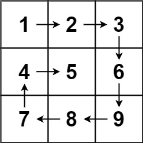
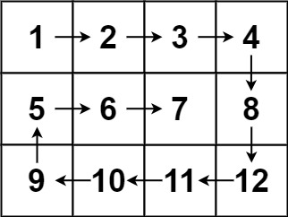

题面
给你一个 m 行 n 列的矩阵 matrix ，请按照 顺时针螺旋顺序 ，返回矩阵中的所有元素。
示例 1：

输入： matrix = [[1,2,3],[4,5,6],[7,8,9]]
输出：[1,2,3,6,9,8,7,4,5]示例 2：

输入： matrix = [[1,2,3,4],[5,6,7,8],[9,10,11,12]]
输出：[1,2,3,4,8,12,11,10,9,5,6,7]提示：
m == matrix.lengthn == matrix[i].length1 <= m, n <= 10-100 <= matrix[i][j] <= 100
思路
- 模拟螺旋遍历，维护四个边界
l, r, t, b，按 →↓←↑ 的顺序逐层收缩：
- → 从左到右遍历顶行，然后
t += 1（顶行下移） - ↓ 从上到下遍历右列，然后
r -= 1（右列左移） - ← 从右到左遍历底行，然后
b -= 1（底行上移） - ↑ 从下到上遍历左列，然后
l += 1（左列右移）
- 每走完一条边就检查边界是否越界，越界则
break。这样不需要在while条件里判断，也不会遗漏中心元素或重复遍历 - 易错点：
- 循环条件写 `while l < r` 会漏元素：当剩余区域为单行/单列/单个元素时
l == r或t == b，用<会直接跳出。改用while True+ 每步break更不容易出错 - break 检查不能少也不能放错位置：每条边走完、边界更新后立刻检查，否则下一条边会用越界的边界遍历，导致重复或越界
代码实现
class Solution:
def spiralOrder(self, matrix: List[List[int]]) -> List[int]:
if not matrix:
return []
l, r, t, b, res = 0, len(matrix[0]) - 1, 0, len(matrix) - 1, []
while True:
for i in range(l, r + 1):
res.append(matrix[t][i])
t += 1
if t > b:
break
for i in range(t, b + 1):
res.append(matrix[i][r])
r -= 1
if l > r:
break
for i in range(r, l - 1, -1):
res.append(matrix[b][i])
b -= 1
if t > b:
break
for i in range(b, t - 1, -1):
res.append(matrix[i][l])
l += 1
if l > r:
break
return res- 复杂度：时间 O(m × n)（每个元素恰好访问一次），空间 O(1)（不计输出数组）